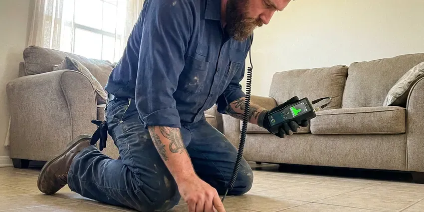

Basement Leak Repair in Wilmington Manor, DE
Basement water is easy to misread, and many plumbers guess at the cause in Wilmington Manor, DE. Our team knows how soil, storms and plumbing each push water inside.
- Licensed & Insured
- Foundation Specialists
- Long-Lasting Solutions
- Upfront Clear Pricing

Dry Out Your Basement for Good With Our Leak Pros in Wilmington Manor, DE.
Our team is ready to provide dependable basement leak solutions to keep your Wilmington Manor home dry and secure.
Your Local Pros for Basement Leak Repair in Wilmington Manor, DE
GNV Plumbing focuses on comprehensive basement leak repair for homes across Delaware. Shifting soil and heavy rain can leave basements in Wilmington Manor susceptible to hydrostatic pressure and foundation cracks, leading to significant water intrusion. Much of Delaware sits on sandy coastal plain soil with a high water table, which affects slab, crawlspace, and septic design.
Our expertise includes:
- Foundation Crack Injection Repairs
- Hydrostatic pressure relief solutions
- Thermal imaging and moisture mapping to find hidden basement leaks

Additional Plumbing Maintenance Services in Wilmington Manor, DE
Our maintenance and specialty plumbing services in Wilmington Manor, DE catch small problems before they become emergencies.


Customers
Why Choose GNV Plumbing for Basement Leak Repair in Wilmington Manor, DE?
Our expertise in local Delaware building codes and common foundation types means we can correctly diagnose and fix your basement leaks with confidence.
- Code Compliant, All our work adheres strictly to local plumbing and building codes in Wilmington Manor and Delaware.
- Clean Repairs, We protect finished floors and walls and open only what we need to access the pipe.
- Code Compliance, All our work meets local plumbing and building codes, giving you peace of mind.
Citywide Coverage
We repair basement leaks in older central neighborhoods of Wilmington Manor and in newer hillside and custom homes alike. Wherever the basement is, our trucks arrive stocked with fittings, pipe and drainage parts.
Experienced Team
Our plumbers have repaired basement leaks behind drywall, under slab floors and inside crawl access points. They know how to read water stains and efflorescence to tell old seepage from an active leak.
Safety-First Approach
We use code-approved materials for every repair and install backwater valves and sump discharge lines to local requirements. If mold is visible, we guide you on safe remediation before walls are closed.
Trusted Certified Wilmington Manor Plumbing Services Professionals
At GNV Plumbing, we take pride in providing licensed, certified plumbing services throughout Wilmington Manor, DE. Backed by leading industry credentials, our experienced plumbers combine technical skill with genuine customer care. Whether it is repair, installation, or maintenance, we follow strict safety and quality standards to deliver lasting results you can trust.
Call Us Now PHCC Plumbing Contractor Recognition
PHCC Plumbing Contractor Recognition Better Business Bureau (BBB) Accreditation
Better Business Bureau (BBB) Accreditation Angi Certified Pro
Angi Certified Pro ISO 9001 Quality Management Certification
ISO 9001 Quality Management CertificationDependable Basement Leak Repair Services in Wilmington Manor, DE
Drain and Sewer Pipe Leak Repair in Wilmington Manor, DE
Cast iron drain stacks in older homes crack and scale with age, and plastic joints can separate if a line was poorly supported. These leaks usually show up only when an upstairs fixture runs. We run water through each drain while watching the basement, then verify the crack with a camera. Repairs range from a single section swap to replacing an entire stack with PVC or ABS.

Sump Pump Repair and Installation in Wilmington Manor, DE
Many basements rely on a sump pit to handle storm runoff and groundwater. After flooding, wells should be tested and septic systems checked before normal use, since floodwater can contaminate both. Pumps from brands like Zoeller, Liberty and Wayne fail most often from a stuck float or a burned-out motor after sitting idle for long stretches. We repair or replace the pump, check the check valve and route the discharge well away from the foundation. A battery backup is worth considering because big storms often knock out power.
Exterior Waterproofing Solutions in Wilmington Manor, DE
For complete basement leak prevention, exterior waterproofing involves excavating around your foundation and applying waterproof membranes or coatings. This creates a robust barrier against moisture intrusion from the outside. While more involved, this method offers superior long-term protection against water damage, especially for older homes in Wilmington Manor.
Wall and Slab Seepage Repair in Wilmington Manor
When water enters through foundation walls or the slab joint, the cause is most often surface water pooling against the house. Much of Delaware sits on sandy coastal plain soil with a high water table, which affects slab, crawlspace, and drainage design. Dense or saturated soil can hold water near the foundation instead of letting it drain away. We seal penetrations where pipes pass through the wall and can install interior drain channels that carry seepage to a sump. We also suggest grading and gutter changes when outside water is the root cause.
Foundation Crack Repair in Wilmington Manor
Foundation cracks are a common entry point for basement water leaks, especially in homes built on soil that swells and shrinks. Much of Delaware sits on sandy coastal plain soil with a high water table, which affects slab, crawlspace, and septic design. We utilize epoxy and polyurethane injection techniques to seal these cracks, preventing water infiltration and reinforcing your foundation. Our methods are tailored to the specific type and size of the crack, ensuring a durable repair.
Sump Pump Installation and Repair in Wilmington Manor
A properly functioning sump pump is crucial for preventing basement flooding, especially during heavy downpours. GNV Plumbing provides professional sump pump installation, repair, and maintenance services. We make sure your pump is correctly sized and installed to handle the water volume, giving you peace of mind.
Basement Leak Repair Cost Comparison in Wilmington Manor, DE
A simple fitting or supply line repair usually costs $200 to $600. Drain stack repairs run $500 to $2,500 depending on access and pipe material. A new sump pump installed typically costs $600 to $1,800, while interior drain channels and full seepage systems can run several thousand dollars. We explain each option in writing so you can weigh the fix against the risk.

Exterior Waterproofing in Wilmington Manor, DE
For a more complete solution, we offer exterior waterproofing, which involves excavating around your foundation, applying a waterproof membrane, and installing drainage boards. This method creates an impermeable barrier on the outside of your basement walls, providing strong protection against water intrusion. Humidity causes condensation on cold water lines and toilet tanks, which can quietly damage floors and encourage mold.
Basement Leak Repair Near Me in Wilmington Manor, DE
Our team is always ready to head out to your Wilmington Manor location, providing prompt and efficient basement leak repair services. We pride ourselves on being a reliable community partner, committed to protecting homes throughout Wilmington Manor from the risks of water damage.
A local plumber also understands how the soil and storms around Wilmington Manor affect lower levels. Much of Delaware sits on sandy coastal plain soil with a high water table, which affects slab, crawlspace, and drainage design. We build those conditions into every repair we recommend.
GNV Plumbing at a Glance
- Fully licensed plumbing team covering Wilmington Manor, DE
- 24/7 emergency service with same-day scheduling
- Upfront, flat-rate pricing before work begins
- 4.8-star rated by 849+ Delaware customers
Wilmington Manor Map
Wilmington Manor Information
- Population
- 8,162
- Area codes
- Local
- Service area
- Wilmington Manor and communities within 40 miles
- Nearby
- New Castle, Elsmere, Wilmington, Edgemoor
Basement leak repair is important for homes in Wilmington Manor, DE, because shifting soil can crack foundations and heavy rain raises hydrostatic pressure against the walls. Much of Delaware sits on sandy coastal plain soil with a high water table, which affects slab, crawlspace, and drainage design.
Expert Services
Trust our professionals for reliable GNV Plumbing solutions in Wilmington Manor, DE.
Our Specialized Plumbing Services in Wilmington Manor, DE
At GNV Plumbing, we provide a complete range of plumbing services across Wilmington Manor, DE. From leak detection to full system installations, our team ensures fast, precise, and affordable service for both residential and commercial properties. Explore our core services below:


Here Is How Our Basement Leak Repair Process Works in Wilmington Manor, DE
We follow a simple path: find the source, fix it properly and prove the fix holds.
Request a Quote
Contact GNV Plumbing by calling (302) 406-6354 to schedule an initial consultation. Our customer service team will gather details about your basement leak and set up a convenient time for an on-site inspection.
Thorough Inspection
A skilled technician will visit your Wilmington Manor property to conduct a detailed assessment. We use modern diagnostic tools to pinpoint the exact source of the leak, whether it's a foundation crack, hydrostatic pressure, or drainage issue.
Customized Solution
Based on our findings, we will provide a clear, itemized estimate outlining the recommended repair strategy. This includes material choices, expected timeline, and a transparent cost breakdown for your specific basement leak repair needs.
Frequently Asked Questions About Basement Leak Repair in Wilmington Manor
Most basement plumbing leak repairs in Wilmington Manor cost $200 to $1,500, depending on the pipe and how hard it is to reach. Sump pump replacements run $600 to $1,800, and full interior drainage systems cost more. We give you a firm price before work starts.
If your basement leak is due to a burst pipe, GNV Plumbing will first address the plumbing issue by repairing or replacing the damaged section. After the active leak is stopped, we can then assess any resulting water damage to your foundation or basement structure and recommend appropriate repairs to prevent future issues. Shutting off and draining outdoor spigots in the fall and insulating crawlspace pipes does a lot toward preventing winter leaks.
While some very minor, surface leaks might be temporarily patched with DIY products, most basement leaks indicate a deeper issue, often related to the foundation or hydrostatic pressure. Professional plumbers like GNV Plumbing have the expertise and specialized equipment to accurately diagnose and provide a lasting solution. Much of Delaware sits on sandy coastal plain soil with a high water table, which affects slab, crawlspace, and drainage design.
Plumbing leaks typically show up regardless of weather and often make your water meter move when everything is off. Seepage tends to appear after storms, snowmelt or heavy irrigation. We verify with meter, pressure and moisture tests.
Basement leak repair directly addresses existing points of water entry, like sealing cracks or fixing drainage. Basement waterproofing is a broader term that covers all strategies, both proactive and reactive, to prevent water intrusion, including repairs and preventive measures like exterior membranes or improved grading. GNV Plumbing offers both services in Wilmington Manor.
Most supply and drain repairs are finished in a few hours. Sump installations take most of a day, and interior drainage systems can take two to four days. We give you a timeline along with your quote.
Common signs of a basement leak include damp spots on walls or floors, a musty odor, visible mold or mildew growth, white powdery efflorescence on concrete or masonry, pooling water, and warped baseboards or flooring. Don't ignore these indicators; addressing them early can prevent more significant issues.
For minor crack repairs, a permit may not be required. However, significant projects involving excavation, structural changes, or major plumbing modifications for drain tile systems frequently require permits from the Wilmington Manor building department. GNV Plumbing handles all required permit applications to ensure compliance.
What People Are Saying About Our Plumbing Experts?

Robert G.
The trenchless sewer replacement saved our front yard. They walked us through the camera inspection footage first so we knew exactly what we were paying for.
Sewer Line Replacement · Wilmington, DE
Daniel K.
A pipe burst at 11 pm and they actually answered. The plumber showed up within the hour, shut everything down, and had us back to normal the next morning. Could not ask for more.
Emergency Plumbing · Edgemoor, DE
Laura S.
I scheduled a water heater replacement, and the team made the process smooth and affordable. The new unit works perfectly, and they cleaned up after completing the job.
Water Heater Replacement · Pike Creek Valley, DE
Mark T.
When our office needed drain cleaning, GNV Plumbing provided quick, reliable service. The plumber arrived on time and made sure every drain flowed perfectly before leaving. Very satisfied.
Drain Cleaning · Wilmington, DEJames P.
Our commercial plumbing system had a leak under the sink, and GNV Plumbing handled it professionally. The plumbers arrived quickly and restored everything without disruption to our customers.
Commercial Plumbing · Elsmere, DE
Emily R.
I called GNV Plumbing for plumbing repair, and the technician was fast, polite, and thorough. They explained the problem clearly and fixed it the same day. I will definitely hire them again. Highly recommended!
Plumbing Repair · Elsmere, DE